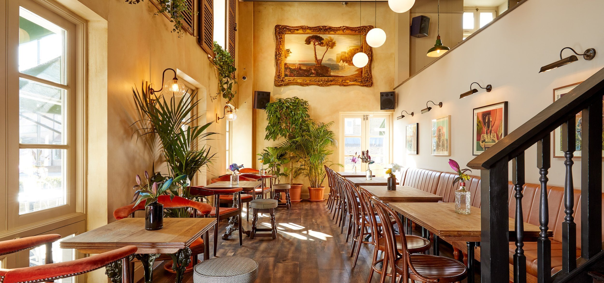
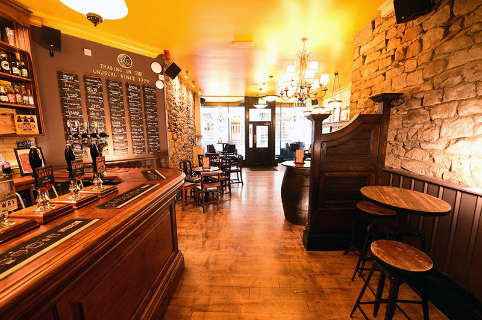

Welcome to Sober Map
Want to see if a specific venue is on our London Sober Points list? Start typing the name in the search and see if it pops up.
Don't see what you're looking for?
Drop us a message and we'll try and get one of our reps to visit the venue and provide a score.
-

-

Badger Badger
A Deptford spot offering a variety of non-alcoholic drinks, including HepcAF on tap.
Sober Points: 4/5
Visit -

Claridge's Bar
Located in Mayfair, offering a selection of alcohol-free cocktails in an elegant setting.
Sober Points: 5/5
Visit -

Club Soda Tasting Room
A Covent Garden venue offering a range of non-alcoholic drinks and tasting experiences.
Sober Points: 5/5
Visit -

Duck and Waffle
A sky-high restaurant offering a variety of non-alcoholic beverages with stunning views.
Sober Points: 4/5
Visit -

Empress Pub
Offers a selection of non-alcoholic spirits and cocktails in a relaxed setting.
Sober Points: 4/5
Visit -

Fox and Anchor
A Hackney venue offering a variety of non-alcoholic beers and ciders.
Sober Points: 4/5
Visit -

Gold
A New Cross pub offering a range of non-alcoholic options in a traditional setting.
Sober Points: 4/5
Visit -

Hawksmoor Bar Wood Wharf
Located in Canary Wharf, offering a selection of non-alcoholic cocktails in a stylish setting.
Sober Points: 5/5
Visit -

-

Lucky Saint Pub
An iconic venue specializing in non-alcoholic beers and food pairings.
Sober Points: 5/5
Visit -

Redemption Bar
A Shoreditch bar offering a selection of healthy non-alcoholic options in a vibrant space.
Sober Points: 3/5
Visit -

Tonight Josephine
Located in Soho, this venue offers a fabulous range of alcohol-free cocktails.
Sober Points: 4/5
Visit -

North Star
A bar in Ealing with a focus on alcohol-free drinks and craft beers.
Sober Points: 4/5
Visit -

Ozone Coffee Roasters
A coffee roastery in Shoreditch serving a range of delicious non-alcoholic drinks.
Sober Points: 4/5
Visit -

Prince of Wales
A vibrant bar in Camden offering an excellent selection of non-alcoholic cocktails.
Sober Points: 4/5
Visit -

Q Shoreditch
A cool venue in Shoreditch with an extensive non-alcoholic menu.
Sober Points: 5/5
Visit -

Seed Library
A venue in Islington offering non-alcoholic cocktails and spirits.
Sober Points: 4/5
Visit -

-

Vins Bar
An East london resteaurant with an extensive menu of alcohol-free wines and beverages.
Sober Points: 4/5
Visit -

-

John Snow Pub
A relaxed, alcohol-free venue offering a wide selection of mocktails and juices.
Sober Points: 4/5
Visit -

Kenzo Bar
A vibrant and alcohol-free bar in Chelsea with a focus on wellness drinks.
Sober Points: 5/5
Visit -

Lady Mildmay
A trendy venue in East London serving a variety of alcohol-free spirits and cocktails.
Sober Points: 4/5
Visit -

Madison Bar
High end restaurant takes inspiration from the lively and eclectic New York dining scene, with a focus on the grill and the best steaks from around the world.
Sober Points: 3/5
Visit -

William IV
A nearly 200 year old corner pub, set over 2 floors serving amazing oysters, seafood.
Sober Points: 4/5
Visit -

XOYO
Sizeable, bi-level nightclub known for electronic music, with a regular calendar of DJs & live acts.
Sober Points: 3/5
Visit -

Yorkshire Grey
A relaxing lounge in North London where you can enjoy alcohol-free smoothies and mocktails after your yoga session.
Sober Points: 4/5
Visit